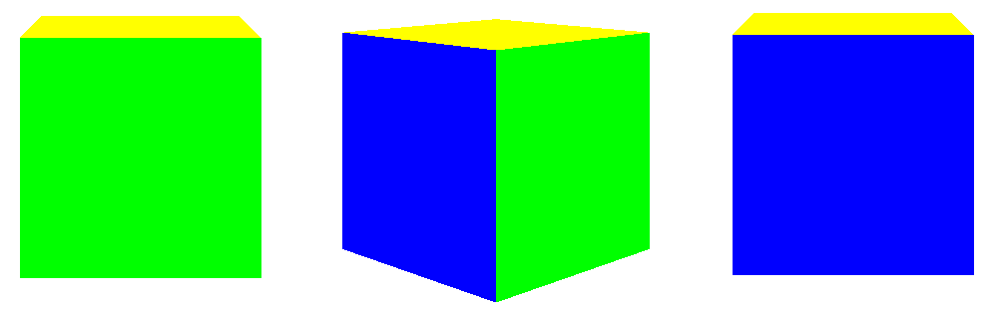

A quaternion is a 4 dimensional complex-like number, it has four components, three of which are the "imaginary" part.
$$ q = a+b\textrm{i}+c\textrm{j}+d\textrm{k} $$
$$ q = (b,c,d, a) $$
$$ \textrm{i}^{2}=\textrm{j}^{2}=\textrm{k}^{2}=\textrm{i}\textrm{j}\textrm{k}=-1 $$
We represent a quaternion with this data structure:
typedef union{
float q[4];
struct{
float x;
float y;
float z;
float w;
};
} Quaternion;
The four components are usually ordered \(w,x,y,z\) but I like to put \(w\) at the end.
Initializing a quaternion:
Quaternion q = (Quaternion){1, 2, 3, 4};
A quaternion is basically a 4 dimensional vector, so it has a magnitude (or norm, or length):
$$||q|| = \sqrt{x^{2}+y^{2}+z^{2}+w^{2}}$$
float quat_magnitude(Quaternion q){
return sqrt(q.x*q.x + q.y*q.y + q.z*q.z + q.w*q.w);
}
A quaternion can be normalized by dividing each component by the magnitude:
Quaternion quat_normalize(Quaternion q){
float m = quat_magnitude(q);
return (Quaternion){
q.x/m,
q.y/m,
q.z/m,
q.w/m
};
}
A special property of quaternions is that a unit quaternion (a quaternion with magnitude \(1\)) represents a rotation in 3D space.
There is a special quaternion called the identity quaternion which corresponds to no rotation:
Quaternion quat_id(){
return (Quaternion){0, 0, 0, 1};
}
Note that \((0, 0, 0, -1)\) is also an identity quaternion.
Scaling a quaternion is multiplying each of its components by a real number (the scalar):
Quaternion quat_scale(Quaternion q, float s){
return (Quaternion){q.x*s, q.y*s, q.z*s, q.w*s};
}
Multiplying two unit quaternions represents a composition of two rotations.
Quaternion multiplication isn't commutative (\(q_{1}.q_{2} \ne q_{2}.q_{1}\)). If we want to apply a rotation \(q_{1}\) then a rotation \(q_{2}\), the resulting rotation \(q_{3}\) is:
$$q_{3}=q_{2}.q_{1}$$Quaternion multiplication looks like this:
$$q_{1} = a+b\textrm{i}+c\textrm{j}+d\textrm{k}$$ $$q_{2} = e+f\textrm{i}+g\textrm{j}+h\textrm{k}$$ $$\begin{align*} q_{1}.q_{2} = (ae-bf-cg-dh)+(af+be+ch-dg)\textrm{i}+\\ (ag-bh+ce+df)\textrm{j}+(ah+bg-cf+de)\textrm{k}\end{align*}$$
Quaternion quat_quat_mul(Quaternion a, Quaternion b){
return (Quaternion){
a.w*b.x + a.x*b.w + a.y*b.z - a.z*b.y,
a.w*b.y - a.x*b.z + a.y*b.w + a.z*b.x,
a.w*b.z + a.x*b.y - a.y*b.x + a.z*b.w,
a.w*b.w - a.x*b.x - a.y*b.y - a.z*b.z
};
}
We use quaternions instead of Euler angles to represent rotations for a couple of reasons:
We represent the orientation of an object using only a quaternion, then we multiply that orientation by another quaternion to rotate it.
However writing a rotation directly in quaternion form isn't really intuitive, what we do instead is convert an Euler angle to a quaternion then use it for rotating.
If we have an Euler angle rotation in the order ZYX (Yaw -> Pitch -> Roll, we can chose any order but must stay consistent), we can convert it to a quaternion like this:
$$ q = \begin{bmatrix} \sin(x/2)\cos(y/2)\cos(z/2)-\cos(x/2)\sin(y/2)\sin(z/2) \\ \cos(x/2)\sin(y/2)\cos(z/2)+\sin(x/2)\cos(y/2)\sin(z/2) \\ \cos(x/2)\cos(y/2)\sin(z/2)-\sin(x/2)\sin(y/2)\cos(z/2) \\ \cos(x/2)\cos(y/2)\cos(z/2)+\sin(x/2)\sin(y/2)\sin(z/2) \end{bmatrix} $$
typedef union{
float v[3];
struct{
float x;
float y;
float z;
};
} Vector3;
Quaternion euler_to_quat(Vector3 e){
float cx = cos(e.x/2);
float sx = sin(e.x/2);
float cy = cos(e.y/2);
float sy = sin(e.y/2);
float cz = cos(e.z/2);
float sz = sin(e.z/2);
return (Quaternion){
sx*cy*cz - cx*sy*sz,
cx*sy*cz + sx*cy*sz,
cx*cy*sz - sx*sy*cz,
cx*cy*cz + sx*sy*sz
};
}
typedef struct Transform{
Vector3 position;
Quaternion rotation;
Vector3 scale;
} Transform;
Transform obj;
obj.position = (Vector3){0, 0, 0};
obj.scale = (Vector3){1, 1, 1};
obj.rotation = quat_id(); // Initially our object isn't rotated
// We rotate the object by PI/4 around the Y axis
obj.rotation = quat_quat_mul(euler_to_quat((Vector3){0, PI/4, 0}), obj.rotation);
// We rotate again by PI/4 making it a PI/2 rotation around Y
obj.rotation = quat_quat_mul(euler_to_quat((Vector3){0, PI/4, 0}), obj.rotation);

When doing 3D rendering, we usually pass an MVP (Model View Projection) matrix to a shader to proprely display our objects in the scene:
$$\textit{MVP} = M_{\textit{projection}}.M_{\textit{view}}.M_{\textit{model}}$$The model matrix itself looks like this:
$$M_{\textit{model}} = M_{\textit{scale}}.M_{\textit{rotate}}.M_{\textit{translate}}$$Each of those matrices is a 4x4 matrix in homogeneous coordinates.
We convert a quaternion to a rotation matrix like this:
$$q = (x, y, z, w)$$ $$ M_{\textit{rotate}} = \begin{bmatrix} 1-2yy-2zz && 2xy-2zw && 2xz+2yw && 0 \\ 2xy+2zw && 1-2xx-2zz && 2yz-2xw && 0 \\ 2xz-2yw && 2yz+2xw && 1-2xx-2yy && 0 \\ 0 && 0 && 0 && 1 \end{bmatrix} $$Graphics APIs (like OpenGL) usually represent matrices in memory in a column-major notation, so we have to transpose the matrices in our code:
typedef union{
float m[16];
struct{
float m00; float m10; float m20; float m30;
float m01; float m11; float m21; float m31;
float m02; float m12; float m22; float m32;
float m03; float m13; float m23; float m33;
};
} Mat4;
Mat4 rotate_3d_matrix(Quaternion q){
float xx = q.x*q.x;
float yy = q.y*q.y;
float zz = q.z*q.z;
return (Mat4){
1-2*yy-2*zz, 2*q.x*q.y+2*q.z*q.w, 2*q.x*q.z-2*q.y*q.w, 0,
2*q.x*q.y-2*q.z*q.w, 1-2*xx-2*zz, 2*q.y*q.z+2*q.x*q.w, 0,
2*q.x*q.z+2*q.y*q.w, 2*q.y*q.z-2*q.x*q.w, 1-2*xx-2*yy, 0,
0, 0, 0, 1
};
}
The conjugate of a quaternion \(q\) is denoted \(q^{*}\):
$$q^{*} = a-b\textrm{i}-c\textrm{j}-d\textrm{k}$$
Quaternion quat_conjugate(Quaternion q){
return (Quaternion){-q.x, -q.y, -q.z, q.w};
}
The inverse of a quaternion \(q\), denoted \(q^{-1}\), is the conjugate divided by the magnitude squared:
$$q^{-1} = \frac{q^{*}}{||q||^{2}}$$
Quaternion quat_inverse(Quaternion q){
float m = quat_magnitude(q);
if(m == 0) return (Quaternion){0, 0, 0, 0}; // avoid division by 0
m *= m;
return (Quaternion){-q.x/m, -q.y/m, -q.z/m, q.w/m};
}
For unit quaternions, the conjugate is equal to the inverse.
Multiplying a quaternion by its inverse results in the identity quaternion:
The difference of two quaternions \(q_{1}\) and \(q_{2}\) is another quaternion \(q_{3}\) that rotates from \(q_{1}\) to \(q_{2}\):
$$q_{3} = q_{1}^{-1}.q_{2}$$
Quaternion quat_difference(Quaternion a, Quaternion b){
return quat_quat_mul(quat_inverse(a), b);
}
The exponential and the logarithm of a quaternion won't be very useful by themselves, but we will use them to compute other functions later.
Given a quaternion \(q = (x,y,z,w)\) and its vector part \(v = (x,y,z)\), the exponential of that quaternion is also a quaternion, and it's given by this formula:
$$\exp(q) = \exp(w)\begin{pmatrix} \frac{v_{x}}{||v||}\sin(||v||)\\ \frac{v_{y}}{||v||}\sin(||v||)\\ \frac{v_{z}}{||v||}\sin(||v||)\\ \cos(||v||) \end{pmatrix}$$
Quaternion quat_exp(Quaternion q){
Vector3 v = (Vector3){q.x, q.y, q.z};
float v_m = Vector3_magnitude(v);
Vector3 v_n = Vector3_normalize(v);
float sin_v = sin(v_m);
float exp_w = exp(q.w);
return (Quaternion){
v_n.x*sin_v*exp_w,
v_n.y*sin_v*exp_w,
v_n.z*sin_v*exp_w,
cos(v_m)*exp_w
};
}
The logarithm of a quaternion is also a quaternion and is given by this formula:
$$\log(q) = \begin{pmatrix} \frac{v_{x}}{||v||}\arccos(\frac{w}{||q||})\\ \frac{v_{y}}{||v||}\arccos(\frac{w}{||q||})\\ \frac{v_{z}}{||v||}\arccos(\frac{w}{||q||})\\ \log(||q||) \end{pmatrix}$$
Quaternion quat_log(Quaternion q){
Vector3 v = (Vector3){q.x, q.y, q.z};
float v_m = Vector3_magnitude(v);
Vector3 v_n = Vector3_normalize(v);
float m = quat_magnitude(q);
float a = acos(q.w/m);
return (Quaternion){
v_n.x*a,
v_n.y*a,
v_n.z*a,
log(m)
};
}
Raising a quaternion to a power results in either a fraction or a multiple of that quaternion. \(q^{2}\) represents twice the rotation of \(q\), and \(q^{\frac{1}{2}}\) represents half of that rotation.
$$q^{n} = \exp(n\log(q))$$
Quaternion quat_pow(Quaternion q, float n){
return quat_exp(quat_scale(quat_log(q), n));
}
Arguably one of the most important advantages of quaternions, "Slerp" stands for spherical linear interpolation. It's a function thats takes three parameters: a quaternion \(q_{1}\), a quaternion \(q_{2}\) and an interpolation parameter \(t\) that goes from \(0\) to \(1\). It gives us an intermediate rotation depending on the value of \(t\).
$$\textrm{slerp}(q_{1}, q_{2}, t) = q_{1}(q_{1}^{-1}q_{2})^{t}$$
Quaternion quat_slerp(Quaternion q1, Quaternion q2, float t){
t = t < 0 ? 0 : t;
t = t > 1 ? 1 : t;
return quat_quat_mul(q1, quat_pow(quat_quat_mul(quat_inverse(q1), q2), t));
}
Here is an animation showing a cube slerping from Euler angle \((0, \frac{5\pi}{4}, \frac{\pi}{4})\) to \((0, 0, 0)\):
Transform obj;
start_rotation = euler_to_quat((Vector3){0, 5*PI/4, PI/4});
target_rotation = euler_to_quat((Vector3){0, 0, 0})
obj.rotation = start_rotation;
float t = 0;
// Main loop
while(1){
...
obj.rotation = quat_slerp(start_rotation, target_rotation, t);
t += delta_time;
...
}